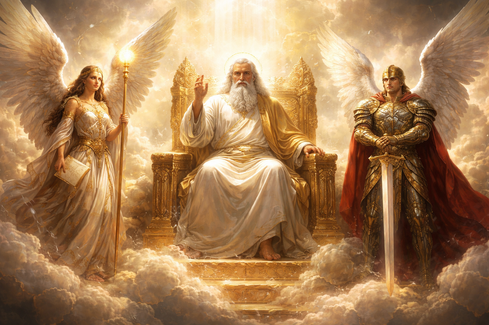

Before anyone drew their first breath the 3 dimensions that separate everyone now wasn't real everything lived in harmony ranging from humans to animals or dinsaurs and sometimes they would even get a visit from GOD. That was until the incident that would change the course of life, in heaven which is now the home of GOD, lived well GOD and his angles there were angles that ranged from archangles also known as warrior angles, messanger angles which you guessed it sends messages from GOD, and there are alot more than I can name.
